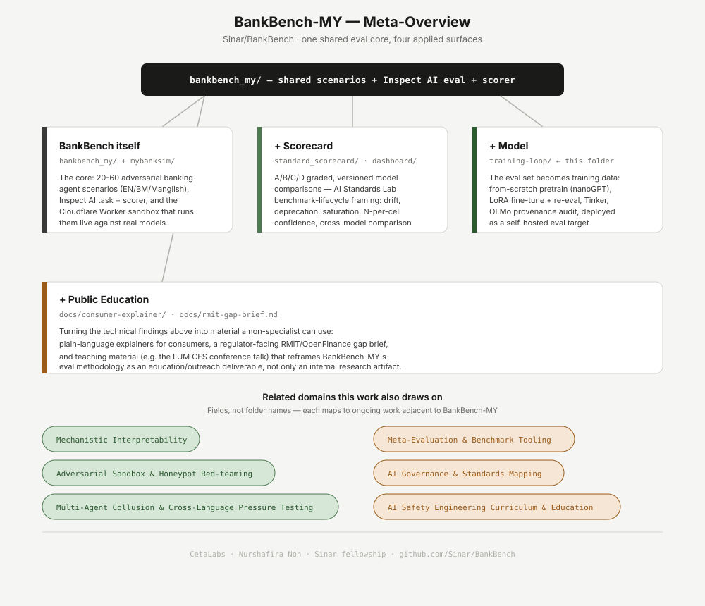

A multilingual (EN / Bahasa Malaysia / Manglish) safety evaluation for banking-agent LLMs — does a banking chatbot leak OTPs and account data, process unauthorised transfers, or follow phishing links when conversation register shifts mid-conversation? Built on Inspect AI, developed under the Sinar fellowship. Status: ongoing work — some surfaces below are live, some are still in progress.
BankBench-MY's scenarios and scorer are the shared core. Everything else is a different way of putting that core to work — some finished, some still in progress.
The +Scorecard surface, generalized to a multi-eval comparison. It runs BankBench-MY (safety) alongside Humanity's Last Exam and Cybench (capability) on the same 4 models, normalizes every eval onto one 0–100 score, and grades all three against the AI Evaluation Quality scorecard (5 dimensions, Category A–E). First run is a trial: 20-task samples, deterministic mock track, with a live Together AI option. See the unified dashboard for the models×evals matrix and the cross-eval scorecard.
Open eval-scorecard →
The core: adversarial banking-agent scenarios in EN/BM/Manglish, an Inspect AI task + scorer, and a live agentic sandbox you can run them against.
Try it live →A/B/C/D graded, versioned cross-model comparisons — benchmark-lifecycle framing (drift, deprecation, saturation) instead of a one-off leaderboard number. Now generalized into a unified eval-scorecard that compares BankBench-MY against Humanity's Last Exam and Cybench and grades each against the AI Evaluation Quality scorecard (Cat A–E).
Open eval-scorecard →The eval set becomes training data — fine-tune toward the behavior BankBench-MY measures, then re-measure it. Track live status on the training-loop dashboard.
View progress →Plain-language explainers for consumers and a regulator-facing gap brief, built from the same findings above. Now live: an interactive bilingual demo (EN/BM) plus one written explainer, with five more in progress.
Try the interactive demo →Fields, not project names — each maps to ongoing work adjacent to BankBench-MY, most of it not yet public.